Eddie Vedder has served as Pearl Jam’s frontman since 1990.
His debut solo release was the 2007 soundtrack album for the film Into the Wild for which Vedder won a Golden Globe for the song “Guaranteed.” In 2012, Vedder’s sophomore solo album, Ukulele Songs, received a Grammy nomination for Best Folk Album.
Music: 1990-present – Pearl Jam, singer, songwriter, guitarist, ukuleleist.
2007-present – solo, singer, songwriter, guitarist, ukuleleist. Solo releases: 2007 – Into the Wild, soundtrack, Golden Globe Award for Best Original Song “Guaranteed." 2011 – Ukulele Songs, nominee for 2012 Best Folk Album GRAMMY Award.
Film and Television: 1992 – Singles, appearance. 1995 – Dead Man Walking, soundtrack. 1996 – Hype!, appearance. 1999 – Cradle Will Rock, soundtrack. 2001 – I Am Sam, soundtrack. 2001 – Last Party 2000, appearance. 2003 – Big Fish, soundtrack. 2003 – End of the Century: The Story of the Ramones, appearance, camera work. 2006 – Reign Over Me, soundtrack. 2007 – Amazing Journey: The Story of the Who, appearance. 2007 – Tom Petty and the Heartbreakers: Runnin’ Down a Dream, appearance. 2007 – I’m Not There, soundtrack. 2007 – Running the Sahara, soundtrack. 2007 – Walk Hard: The Dewey Cox Story, appearance. 2007 – Slacker Uprising, appearance. 2007 – Into the Wild, soundtrack. 2008 – Song Sung Blue, appearance. 2008 – Body of War: Songs that Inspired an Iraq War Veteran, soundtrack. 2009 – The People Speak, appearance. 2010 – Eat Pray Love, soundtrack. 2011– Conan O'Brien Can't Stop, appearance. 2011 – Pearl Jam Twenty, appearance, camera work and soundtrack. 2011 – Portlandia, appearance. 2016 – Roadies, actor and soundtrack. 2016 – Beat Bugs, soundtrack. 2015 – Aloha, soundtrack. 2017 – Twin Peaks, appearance and soundtrack.
Activism: EB Research Partnership, Executive Board and Management; "Heal EB: Cause the Wave" campaign, JPHRO, Seattle Translational Tumor Research.
| 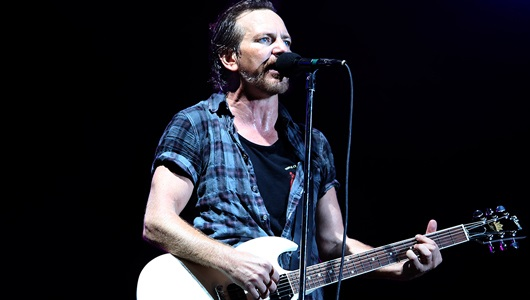 | 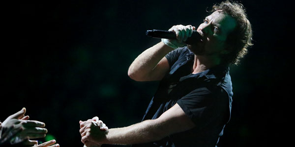 | 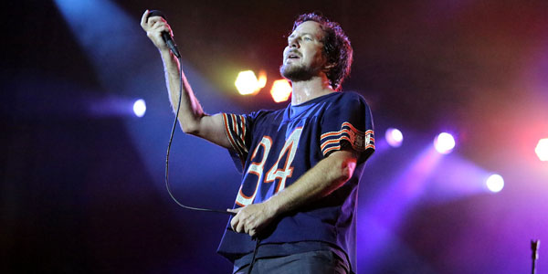 |
Mike McCready is the lead guitarist for and one of the founding members of Pearl Jam.
He has also been a member of Temple of the Dog, Mad Season, The Rockfords and Levee Walkers. Additionally, McCready plays with friends in Flight to Mars, a UFO tribute band that hosts charity events for the Crohn's and Colitis Foundation's Camp Oasis program and the Jennifer Jaff Care Line.
When not performing live, McCready scores TV and film projects which have included The Glamour & the Squalor, Shameless, Fat Kid Rules the World, Hawaii Five-O, We Bought A Zoo, Horrible Bosses, and Fringe.
In 2013, McCready founded Hockeytalkter Records, a small vinyl record label and media outlet specializing in limited edition 7-inch singles with releases from Brandi Carlile, Star Anna, Danny Newcomb, and the debut release from Seattle's Thunderpussy. McCready recently released his debut photo book release, Of Potato Heads and Polaroids.
| 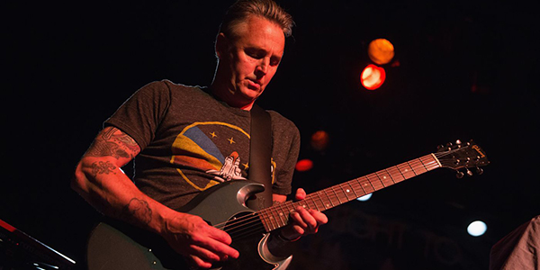 | 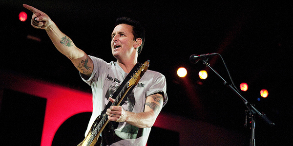 | 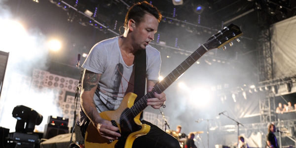 |
Jeff Ament is the bass guitarist for and one of the founding members of Pearl Jam.
He has also performed as a member of bands Green River, Mother Love Bone, Temple of the Dog, War Babies, Three Fish, Tres Mts., Deranged Diction and RNDM.Additionally, Ament has released several solo albums and projects including Tone and While My Heart Beats.
A lifelong skateboarder, Ament has helped fund and build over a dozen skateparks across Montana and South Dakota, many on Native American reservations.
| 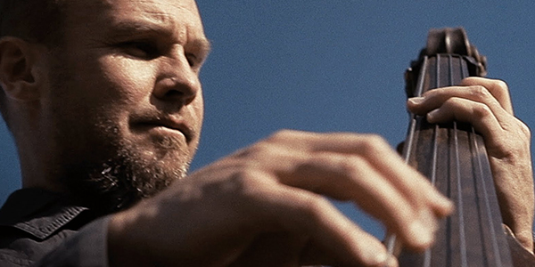 | 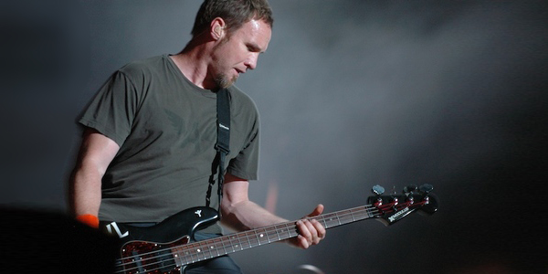 | 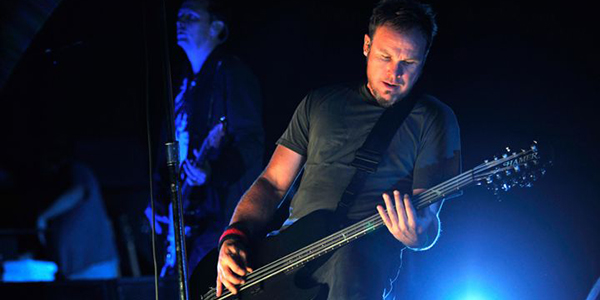 |
Matt Cameron is the drummer for Pearl Jam and Soundgarden.
Cameron has also performed as a member of bands Skin Yard, Hater, Temple of the Dog, Wellwater Conspiracy, Harrybu McCage and Ten Commandos.
Additionally, Matt has lent his drumming talents to projects from fellow artists including Peter Frampton, Geddy Lee and Queens of the Stone Age, Janet Weiss and more.
A champion for arts education, Cameron has performed with and mentored several students through School of Rock.
| 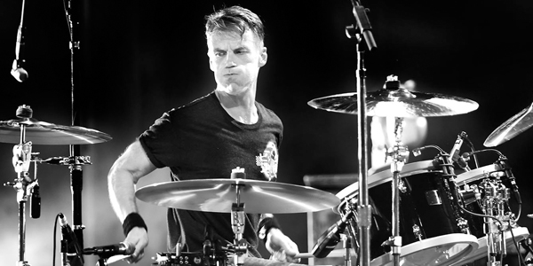 | 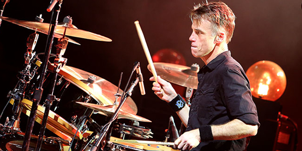 | 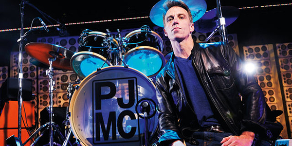 |
Stone Gossard is the rhythm guitarist for and one of the founding members of Pearl Jam.
He has also performed as a member of bands March of Crimes, Green River, Mother Love Bone, Temple of the Dog and Brad. Additionally, Gossard has released several solo albums and projects including Bayleaf and Moonlander.
Stone has long been an environmental activist. His work to this end includes spearheading Pearl Jam's carbon mitigation program and serving as a member of the board of directors at the Wild Salmon Center.
| 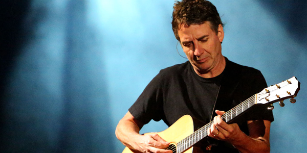 | 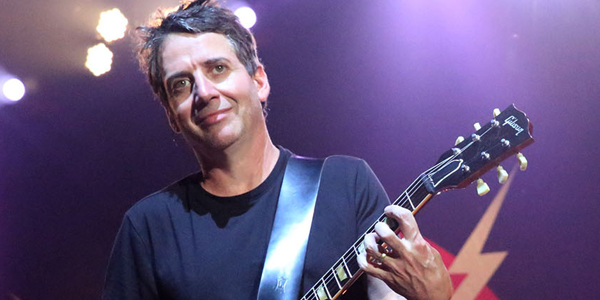 | 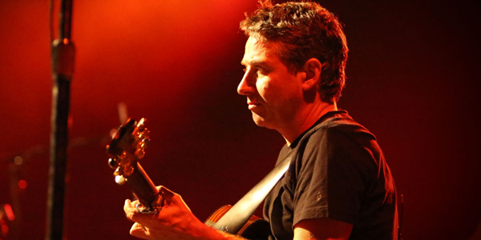 |